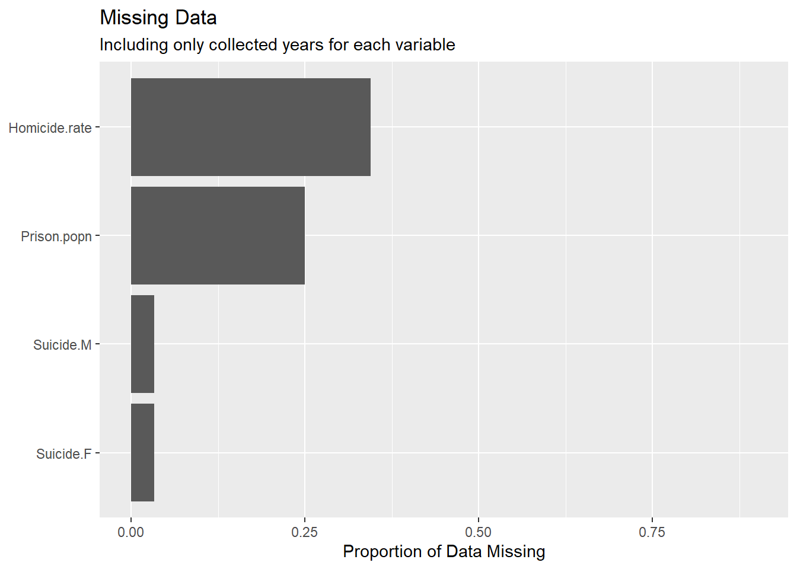
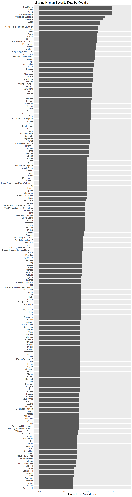

Chapter 4 Missing values
4.1 Inequality Missing Data
Below is a bar plot showing the count of missing data per feature.
The above shows that for 7 of the 9 features, 20-25% of its entries are missing.
Since there is only 9 years and 9 features, a heat map is an appropriate to visualize combinations of missing data between Year and the different features to see if there’s any relationship in proportion of missing data for a specific feature across years (and vice versa).
The above heat map is drawn such that the feature with the largest proportion of missing data is at the bottom. From the heat map, it looks like 2011 and 2012 have the highest rates of missing data for every features aside from “Inequality in life expectancy (%)” and “Inequality-adjusted life expectancy index”. However, note that the proportion of missing data peaks at around 0.3 and most feature-year combinations have proportion of missing data that are below 0.2, which are manageable.
The below is the aggregate sum of number of missing entries over all features for each country, filtering only the countries with at least one missing entry.

It looks like 100% of the data is missing for Saint Kitts and Nevis, Liechtenstein, and Dominica. In addition, >87.5% of the data is missing for Nauru, Marshall Islands, Andorra, and Tuvalu. All of these countries are extremely small (most are islands) and it is possible that Inequality data is not collected nationally and/or data collection is not prioritized by the relevant international organizations.
Due to the large volume of countries, a heat map is not an effective way to visualize the relationship in proportion of data missing between countries and features. A parallel coordinate plot was drawn instead to determine if there’s any relationship between features and proportion of missing data for different countries.
Most countries appear to not be missing data for “Inequality-adjusted life expectancy index” and “Inequality in life expectancy (%)” and when they do, both features are missing in similar proportions.
For remaining features, at intervals of around 0.1 from 0 to 1, there are clusters of countries missing that proportion of data for each feature.
There is a small number of countries missing data for most to all of the features (flat line at the top), these are likely the smaller countries found in the bar charts.
For “Coefficient of Human Inequality”, “Overall loss in HDI due to inequality (%)”, and “Inequality-adjusted HDI (IHDI)”, countries generally miss the same proportion of the data for all 3 features, indicating that they may be related.
For “Inequality-adjusted income index” and “Inequality in income (%)”, countries generally miss the same proportion of the data for these two features; they are likely related. In addition, countries generally are missing an equal to or smaller proportion of data for these two features than the 3 features mentioned in the previous bullet.
For “Inequality-adjusted education index” and “Inequality in education (%)” countries generally miss the same proportion of the data for these two features; they are likely related.
4.2 Human Security Missing Data
A significant proportion of data in the Human.Security dataframe is missing. Largely, this seems to be the product of uneven variable tracking. Homelessness due to natural disasters seems to be tracked in most countries on a yearly basis between 1990 and 2018. By contrast, Homicide rate was recorded only in 1990, 1995, 2000, 2005, and yearly from 2010 to 2017. As another exmaple, suicide rate for both males and females were recorded only in the years 2000, 2010, 2015, and 2016.
## [1] "X1990" "X1991" "X1992" "X1993" "X1994" "X1995" "X1996" "X1997" "X1998" "X1999"
## [11] "X2000" "X2001" "X2002" "X2003" "X2004" "X2005" "X2006" "X2007" "X2008" "X2009"
## [21] "X2010" "X2011" "X2012" "X2013" "X2014" "X2015" "X2016" "X2017" "X2018"## [1] "X1990" "X1995" "X2000" "X2005" "X2010" "X2011" "X2012" "X2013" "X2014" "X2015"
## [11] "X2016" "X2017"## [1] "X2000" "X2010" "X2015" "X2016"## [1] "X2000" "X2010" "X2015" "X2016"

Importantly, data also appears to be missing among outlying island countries and countries in the African continent. For example, the chart below notes missing Homicide data.
A notable chunk of countries (obs. numbers 50-100) seem to be missing data between 1990 and 2005. However, the largest amount of missing data seems to be concentrated in observations 150 to 192, which includes Micronesia and many of the countries on and around the African continent (ie. Nigeria, Sudan, Senegal).
This trend is not unknown in international data collection. Lower infrastructural development renders data collection difficult, and factors like human rights and humanitarian crises, political violence, and political instability can hinder data collection processes.

4.3 Education Missing Data
There are 9.535^{4} missing observations across the variables, year and country. The following bar chart displaying an interesting yet confusing pattern. It looks like all countries have between 394 and 725. Keeping in mind the data spans 29 years, and 25 variables, this is sensible, though there doesn’t seem to be much of a pttern to missing observations, though smaller countries seem partially more likely to have missing data.

For this analysis we want the variables with the least missing values across Countries to have a complete analysis. Overall it looks like, we can already begin narrowing down some of our variables to the ones that have almost no missings across all countries such as education index, or mean years of schooling. Other interesting notes are that the formerYugoslav Republic of Macedonia seems to have all missing observations– which is correct according to the original source data, and after a little digging is because it has been replaced by North Macedonia, and is likely a left over. Percent of students without access to internet seems to be reported by very few, and mostly developed countries. The percent of population with at least some secondary education also seems like a variable that is frequently reported.

Breaking down the analysis a little further, it looks we should definitely focus on 2010 onwards gfiving the lack of data across countries on a consistent basis for singular years beforehand. It looks like the data was previously released in 5-year buckets.

Interestingly breakding down the missing variables by year confirms what was seen previously. The most reliable variables will be Education Index, Mean Years of Schooling, and Expected Years of Schooling, according to the lower number of missings throughout the years, as well as population with some secondary education.